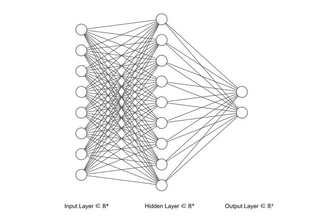
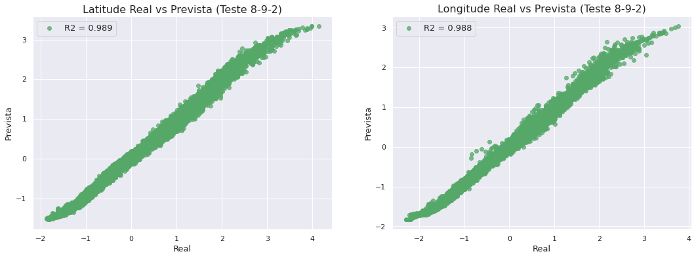
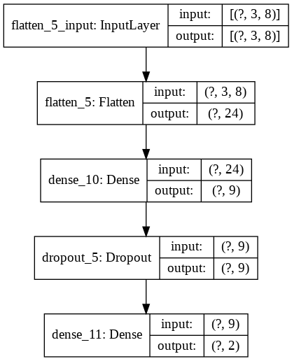
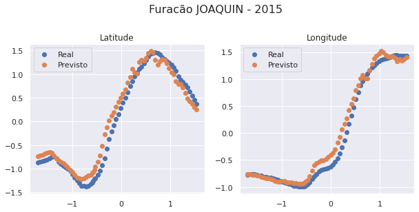
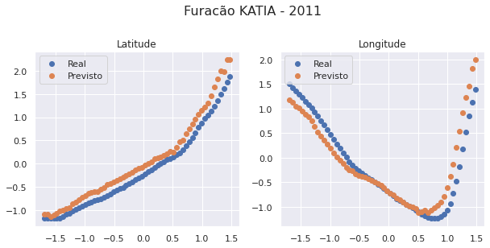

Redes Neurais para Previsão de Trajetória
Além de todas as análises feitas, implementamos também uma rede neural que usa informações de um furacão de algumas horas atrás e do presente, e projeta a sua posição futura em coordenadas geográficas.
Funcionamento da Predição
O input da rede é uma matriz do tipo:
na qual:
-
representam os preditores usados. Testamos dois conjuntos de modelos, o primeiro com 4 preditores (Tempo, Latitude, Longitude e Velocidade de vento) e o segundo com 8 (anteriores mais Temperatura do mar, Umidade, Pressão e Nebulosidade). Fizemos uma comparação da função de perda entre eles para eleger o melhor conjunto de entrada, e usar 8 preditores apresentou melhores resultados.
-
representa o preditor no registro de tempo . Cada registro dos nossos dados está espaçado por 6 horas do próximo e do anterior. Sendo assim, pela matriz acima, usamos um conjunto de 3 registros sequenciais, que representam 18 horas.
Nossa saída é da forma:
O vetor geral é composto por:
que representa a latitude e longitude no registro ou seja, + horas depois do último ponto de treinamento.
Treino, Validação e Teste
Para formatar os dados de treino, teste e validação, tivemos que fazer um tratamento diferenciado e manual, para que o treinamento e previsão ocorresse tempestade por tempestade e não misturasse dados.
Usamos uma divisão de 70% para treino, 20% para validação e 10% para teste. Para mais detalhes do processo veja o notebook NN-TrackPrediction.ipynb.
Anatomia das redes e comparação dos modelos

Fizemos vários modelos com anatomias diferentes apesar de parecidas, elegemos o melhor através do MSE (Erros Médio Quadrático) nos dados de teste e validação.
A anatomia desse modelo campeão é a seguinte:
-
8 variáveis de input (Tempo, Latitude, Longitude e Velocidade de vento, Temperatura do mar, Umidade, Pressão e Nebulosidade) para cada um dos registros passados. Como usamos 3 registros temos então 24 neurônios de entrada.
-
1 única camada interna com 9 neurônios e função de ativação sigmoidal.
-
2 neurônios para a camada de output, um para latitude e outro para longitude, com ativação linear.
-
Camada de dropout de 15% para evitar overfitting.
Código
model_892 = tf.keras.models.Sequential([
tf.keras.layers.Flatten(input_shape=(3,8)),
tf.keras.layers.Dense(9, activation='sigmoid'),
tf.keras.layers.Dropout(0.15),
tf.keras.layers.Dense(2, activation='linear')
])

Performance
from sklearn.metrics import r2_score
ypred = model_892.predict(xtest2)
lat_r2 = r2_score(ytest2[:,0],ypred[:,0])
lon_r2 = r2_score(ytest2[:,1],ypred[:,1])
tot_r2 = r2_score(ytest2,ypred)
print(f"R2 Latitude Teste - {lat_r2}")
print(f"R2 Longitude Teste - {lon_r2}")
print(f"R2 Total Teste - {tot_r2}")
fig, (ax,ax1) = plt.subplots(1,2,figsize=(18,6))
ax.set_title("Latitude Real vs Prevista (Teste 8-9-2)",fontsize=16)
ax.set_xlabel("Real",fontsize = 13)
ax.set_ylabel("Prevista",fontsize = 13)
ax.scatter(ytest2[:,0],ypred[:,0],alpha = 0.75, color = 'g',label = f"R2 = {round(lat_r2,3)}")
ax.legend(loc='best', fontsize = 13)
ax1.set_title("Longitude Real vs Prevista (Teste 8-9-2)",fontsize=16)
ax1.set_xlabel("Real",fontsize = 13)
ax1.set_ylabel("Prevista",fontsize = 13)
ax1.scatter(ytest2[:,1],ypred[:,1],alpha = 0.75, color = 'g',label = f"R2 = {round(lon_r2,3)}")
ax1.legend(loc='best', fontsize = 13);
plt.savefig('../figs/lat_lon_teste.jpg')
R2 Latitude Teste - 0.9890722375652974
R2 Longitude Teste - 0.9879249013965508
R2 Total Teste - 0.9884985694809241

Nos dados de teste, temos resultados muito bons! Abaixo vemos um esquema do modelo 8-9-2.
tf.keras.utils.plot_model(
model_892,
to_file='../figs/model_892.png',
show_shapes=True,
show_layer_names=True,
rankdir='TB',
expand_nested=False,
dpi=96
)
# plt.savefig('figs/model892.jpg')

Previsões
Vamos testar a previsão para algumas tempestades específicas do conjunto de testes.
splitted_data = split(data)
n = len(splitted_data)
test_storms = splitted_data[int(n*(0.9)):]
data_test = pd.concat(test_storms)
data_test.loc[:,'Hours'] = (data_test.loc[:,'Time_new']-pd.Timestamp(1951,1,1))/pd.Timedelta('1 hour')
data_test.head()
| ID | Name | Date | Time | Event | Status | Latitude | Longitude | Maximum Wind | Minimum Pressure | Date_c | Year | Month | Day | Latitude_c | Longitude_c | Duration | sst | rhum | wspd | slp | cldc | Time_new | Hours | |
|---|---|---|---|---|---|---|---|---|---|---|---|---|---|---|---|---|---|---|---|---|---|---|---|---|
| 20259 | AL022011 | BRET | 2011-07-16 | 600 | NaN | LO | 30.7 | -79.7 | 20 | 1014 | 2011-07-16 | 2011 | 7 | 16 | 30.7 | -79.7 | 7 | 29.212346 | 81.503754 | 81.503754 | 1003.891696 | 4.721866 | 2011-07-16 06:00:00 | 530670.0 |
| 20260 | AL022011 | BRET | 2011-07-16 | 1200 | NaN | LO | 30.3 | -79.4 | 20 | 1014 | 2011-07-16 | 2011 | 7 | 16 | 30.3 | -79.4 | 7 | 29.212489 | 81.512076 | 81.512076 | 1003.897948 | 4.720945 | 2011-07-16 12:00:00 | 530676.0 |
| 20261 | AL022011 | BRET | 2011-07-16 | 1800 | NaN | LO | 29.8 | -79.1 | 20 | 1014 | 2011-07-16 | 2011 | 7 | 16 | 29.8 | -79.1 | 7 | 29.141944 | 82.018334 | 82.018334 | 1005.045524 | 4.940012 | 2011-07-16 18:00:00 | 530682.0 |
| 20262 | AL022011 | BRET | 2011-07-17 | 0 | NaN | LO | 29.3 | -78.8 | 20 | 1014 | 2011-07-17 | 2011 | 7 | 17 | 29.3 | -78.8 | 7 | 28.998422 | 82.957671 | 82.957671 | 1005.403854 | 4.952418 | 2011-07-17 00:00:00 | 530688.0 |
| 20263 | AL022011 | BRET | 2011-07-17 | 600 | NaN | LO | 28.8 | -78.5 | 20 | 1014 | 2011-07-17 | 2011 | 7 | 17 | 28.8 | -78.5 | 7 | 28.999376 | 82.953919 | 82.953919 | 1005.405851 | 4.950652 | 2011-07-17 06:00:00 | 530694.0 |
import warnings
warnings.simplefilter("ignore")
def predict(storm,model,shift=3,pred=1):
storm = storm.set_index(np.arange(0,len(storm)))
y_pred=[]
for i in range(0,len(storm)-shift-1):
x = []
for j in range(i,i+shift):
x.append(storm.loc[j,:])
# if i == 0:
# print(np.expand_dims(np.asarray(x), axis=0).shape)
# print(np.expand_dims(np.asarray(x),axis=0)[0,0,0])
y_pred.append(model.predict(np.expand_dims(np.asarray(x),axis=0)).ravel())
del x
return np.array(y_pred)
def predict_storm(ID):
name = data_test[data_test.ID==ID].Name.iloc[0]
year = data_test[data_test.ID==ID].Year.iloc[0]
storm = data_test[data_test.ID==ID]
storm.loc[:,cols2]=standard_scale(storm,cols2)
st = storm.loc[:,cols2]
st_pred = predict(st,model_892)
st_plot = st.iloc[0:-4,:]
fig,ax = plt.subplots(1,2,figsize=(10,4))
fig.suptitle(f"Furacão {name} - {year}", fontsize=16,y=1.08)
ax[0].set_title("Latitude")
ax[1].set_title("Longitude")
print(r2_score(st_plot.Latitude,st_pred[:,0]))
print(r2_score(st_plot.Longitude,st_pred[:,1]))
ax[0].scatter(st_plot.Hours,st_plot.Latitude,label = 'Real')
ax[0].scatter(st_plot.Hours,st_pred[:,0],label = 'Previsto')
ax[1].scatter(st_plot.Hours,st_plot.Longitude,label = 'Real')
ax[1].scatter(st_plot.Hours,st_pred[:,1],label = 'Previsto')
ax[0].legend(loc='best')
ax[1].legend(loc='best')
plt.savefig(f"../figs/NN-{name}.jpg")
predict_storm('AL092011')
0.912396866066715
0.8587266243812284

predict_storm('AL112015')
0.9650855905600251
0.9805961966628389

# data_test[(data_test.Duration>7)&(data_test.Name!="IRENE")&(data_test.Name!="JOAQUIN")].sort_values(by='Maximum Wind',ascending=0)
predict_storm('AL122011')
0.9235033244762332
0.8633440966820972
